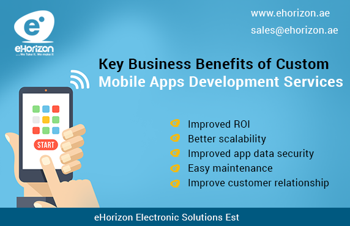

<?xml version="1.0" encoding="UTF-8"?><rss version="2.0"
	xmlns:content="http://purl.org/rss/1.0/modules/content/"
	xmlns:wfw="http://wellformedweb.org/CommentAPI/"
	xmlns:dc="http://purl.org/dc/elements/1.1/"
	xmlns:atom="http://www.w3.org/2005/Atom"
	xmlns:sy="http://purl.org/rss/1.0/modules/syndication/"
	xmlns:slash="http://purl.org/rss/1.0/modules/slash/"
	>

<channel>
	<title>website development &#8211; Blog</title>
	<atom:link href="https://www.ehorizon.ae/blog/category/website-development/feed/" rel="self" type="application/rss+xml" />
	<link>https://www.ehorizon.ae/blog</link>
	<description></description>
	<lastBuildDate>Thu, 01 Mar 2018 05:29:32 +0000</lastBuildDate>
	<language>en-US</language>
	<sy:updatePeriod>hourly</sy:updatePeriod>
	<sy:updateFrequency>1</sy:updateFrequency>
	<generator>https://wordpress.org/?v=4.4.15</generator>
	<item>
		<title>Addressing Top Challenges in Mobile App Development</title>
		<link>https://www.ehorizon.ae/blog/2017/09/08/addressing-top-challenges-in-mobile-app-development/</link>
		<comments>https://www.ehorizon.ae/blog/2017/09/08/addressing-top-challenges-in-mobile-app-development/#respond</comments>
		<pubDate>Fri, 08 Sep 2017 06:15:37 +0000</pubDate>
		<dc:creator><![CDATA[eHorizon]]></dc:creator>
				<category><![CDATA[website development]]></category>
		<category><![CDATA[mobile apps development Company in Dubai]]></category>

		<guid isPermaLink="false">https://www.ehorizon.ae/blog/?p=213</guid>
		<description><![CDATA[<p>Similar to the wider changes in software development, there has been a big change in enterprise needs and challenges. There is a gradual shift in the client-enterprise interactions from the desktop to mobile devices, and that has caused an increase in requirement for suitable mobile apps development in Dubai and elsewhere for the enterprise. However, [&#8230;]</p>
<p>The post <a rel="nofollow" href="../../../2017/09/08/addressing-top-challenges-in-mobile-app-development/index.html">Addressing Top Challenges in Mobile App Development</a> appeared first on <a rel="nofollow" href="../../../index.html">Blog</a>.</p>
]]></description>
				<content:encoded><![CDATA[<p style="text-align: justify;">Similar to the wider changes in software development, there has been a big change in enterprise needs and challenges. There is a gradual shift in the client-enterprise interactions from the desktop to mobile devices, and that has caused an increase in requirement for suitable mobile apps development in Dubai and elsewhere for the enterprise.</p>
<p style="text-align: justify;">However, the creation of well-designed and successful mobile apps is quite challenging and requires considering certain factors. Here are five of the major challenges that should be addressed for a seamless experience of mobile devices.</p>
<p style="text-align: justify;"><strong>Division of Devices and Operating Systems</strong></p>
<p style="text-align: justify;">In the present scenario, there is significant fragmentation of operating systems and devices. To go about developing a mobile app, your first consideration would be to select from the three most popular platforms (Android, Windows, and iOS) for mobile app development.</p>
<p style="text-align: justify;">However, it is true that you obviously would prefer to work with configurations and capabilities for developing an app that meets the requirement of the specific vendors. In addition, you also have to take into account the needs of the client. In addition to reaching out to their customers, the client also needs to see that the app is being used for profit. Other than only considering the functionality compatibility of the app being developed, it is also necessary to know the specifics of the targeted clients of the enterprise.</p>
<p style="text-align: justify;"></p>
<p style="text-align: justify;"><strong>Technology used for development </strong></p>
<p style="text-align: justify;">There are two types of mobile app development. These are the Native app development and the Hybrid app development.</p>
<p style="text-align: justify;">The Native apps are built intentionally for a specific platform (like Google&#8217;s Android, Apple&#8217;s iOS, Blackberry, or Window’s Window Phone). Unlike the web, the Native apps have the characteristics of superior application performance and better user experience, provided they are developed and designed within the operating system. The downside of the native apps is that one needs to develop apps for every platform, which takes up time and are not profitable.</p>
<p style="text-align: justify;">Usually, HTML5 is used to develop Hybrid mobile apps and could well be installed on any mobile device, and they use a web browser to run. The good thing about developing hybrid mobile apps is that the time required to build across multiple platforms is considerably lowered. The downside is that the performance of the hybrid app is hindered, and one needs to do away with some features to make it up and running. At the time of selecting the best option, you need to take into account that any wrong choice could cause the app to perform badly as the user finds the experience not up to the mark. The expenses also increase as a result. This makes it important to know the target audience of the client and their choice of mobile vendors (along with the availability of third-party vendors). All these information would help in the selection of better development technology.</p>
<p style="text-align: justify;"><strong>User interactivity and experience</strong></p>
<p style="text-align: justify;">The UI/UE now is the major cause for concerns for the developers of mobile applications. The first challenge for developing the app is to include the best experience while developing the app for the client. A major concern in development is the inconsistency of the clients when it comes to the functionalities to be included in the app, and also their changing preferences for aesthetics. Another challenge for the enterprise app developer is the differences of the platforms when it comes to screen resolutions, sizes, and the available technologies. Any wrong judgment in these factors could lead to a counter-intuitive and cumbersome experience for the client, and could lead to low adaptability of the app among customers. To get over these issues, it is important to take into account the requirements of different OS, do regular fixing of bugs, and make use of icons and buttons (like “home” or “menu”) to turn the app more intuitive. It is important to make the app work on multiple platforms, along with adding interactive options like tilting, shaking, and flipping.</p>
<p style="text-align: justify;"><strong>Content management and security</strong></p>
<p style="text-align: justify;">There is a growing need for mobile app content and it is now becoming more dynamic with time. In addition, images, animation, and video also should be included in the content of the app. The challenge is to include all these into a uniform expansion files, which is required for some app stores. It makes sense to experiment with the many solutions for mobile content management. In addition to content management, enterprise developers should also consider security aspect of such contents.</p>
<p style="text-align: justify;">The vast opportunities that are available for both enterprises and their clients help in the possibility to access the contents of apps. However, along with the opportunities, there comes the possibility of misuse of information. It is for this reason that many enterprises prefer to use mobile device management solutions to lock their apps, which when used wrongly, could lead to poor experience among app users. On the contrary, employees do not like any kind of control on the network of companies as well as over their devices.</p>
<p style="text-align: justify;">For the enterprise mobile app developer, it is important that the app so developed has server-side validation, proper authentication plans, encryption of important data to prevent the various security issues. It should however be noted that the security is flexible and quite different from other enterprises. For example, the security level and authentication that you would require is different for banking app and an online display shop.</p>
<p style="text-align: justify;"><strong>Application performance Vs battery life</strong></p>
<p style="text-align: justify;">A big challenge when it comes to developing enterprise mobile app is to make sure that the app actually works fine. In addition, the app needs to be free from bugs, and it is possible to work at a lower battery power. It is important to take into consideration that the app might be working good on newer mobile devices while it is not performing so well in older versions of the devices. If the client finds that the app is now showing good performance with low batter consumption, there are good chances of the client deleting the app because they want that their handset is keeping charge for a full-day use without any further need for charging. To get over this issue, see to it that the development team works together with the prototyping efforts. See to it that the test cases are run with the app so that the users do not face performance trouble when the final version is brought out.</p>
<p style="text-align: justify;">If you want to build a strong mobile app for your organization, contact the expert team of eHorizon, the leading <strong><a href="../../../../android-application-development-services.html">mobile apps development Company in Dubai</a> </strong>.</p>
<p>The post <a rel="nofollow" href="../../../2017/09/08/addressing-top-challenges-in-mobile-app-development/index.html">Addressing Top Challenges in Mobile App Development</a> appeared first on <a rel="nofollow" href="../../../index.html">Blog</a>.</p>
]]></content:encoded>
			<wfw:commentRss>https://www.ehorizon.ae/blog/2017/09/08/addressing-top-challenges-in-mobile-app-development/feed/</wfw:commentRss>
		<slash:comments>0</slash:comments>
		</item>
		<item>
		<title>What Makes A Website Development Company The Best Choice ?</title>
		<link>https://www.ehorizon.ae/blog/2017/08/22/what-makes-a-website-development-company-the-best-choice/</link>
		<comments>https://www.ehorizon.ae/blog/2017/08/22/what-makes-a-website-development-company-the-best-choice/#respond</comments>
		<pubDate>Tue, 22 Aug 2017 05:48:45 +0000</pubDate>
		<dc:creator><![CDATA[eHorizon]]></dc:creator>
				<category><![CDATA[website development]]></category>
		<category><![CDATA[website development in Dubai]]></category>

		<guid isPermaLink="false">https://www.ehorizon.ae/blog/?p=209</guid>
		<description><![CDATA[<p>Nowadays, there is a growing interest to hire the services of a web development company in Dubai and elsewhere to develop websites. However, in the initial phase, the freelancers were the preferred choice to work for web design projects because of their love to design creative websites and do the necessary coding. Now the financial [&#8230;]</p>
<p>The post <a rel="nofollow" href="../../../2017/08/22/what-makes-a-website-development-company-the-best-choice/index.html">What Makes A Website Development Company The Best Choice ?</a> appeared first on <a rel="nofollow" href="../../../index.html">Blog</a>.</p>
]]></description>
				<content:encoded><![CDATA[<p style="text-align: justify;">Nowadays, there is a growing interest to hire the services of a web development company in Dubai and elsewhere to develop websites. However, in the initial phase, the freelancers were the preferred choice to work for web design projects because of their love to design creative websites and do the necessary coding. Now the financial factor is gaining in importance and they would rather work for a company dedicated to website development than work as a freelancer. Sadly enough, freelancers now find less time in experimenting with code and images.</p>
<p style="text-align: justify;"></p>
<p style="text-align: justify;">Irrespective of new or old, a website development company is the preferred option for most customers. It is true that these companies lose many good deals to freelancers, and it goes without saying, it is quite a concern for these companies. However, the big reason for the web development companies remaining the top choices is the availability of experts that help their clients in the long run. These companies help their employees to brush up their talents on the latest codes and other developments. Some of the reasons that make going for a web development company a better choice than working as a freelancer are given below:</p>
<p style="text-align: justify;"><strong>Use of Latest Technology</strong></p>
<p style="text-align: justify;">The good thing about web development companies is that they start using newer technologies as soon as they come to the market. These companies have experts who are able to understand every details of the new technology and are ready to use them immediately. The whole team works together to deliver excellent results. It is the employees working for the company that finally counts for the success of a project. In addition to working together as a team, the individual also works on their own on a specific aspect of the project. Every coder is skilled in a specific field, which could be designing, functionality, or coding. The team works with the latest technology available and works with more methods as well. There is no complexity related to approval and management of the project in these companies as every individual focuses on a specific aspect using the best technology available to make the results simpler.</p>
<p style="text-align: justify;"><strong>Skills and Qualifications</strong></p>
<p style="text-align: justify;">As the team members work in a team, the skills of the individuals automatically gets developed as well. It is working on many projects that give the employees of web development companies the edge that is missing among freelancers. The skills of the employees improve each day during various gathering like group meetings. The meetings offer an opportunity for the employees to learn more and upgrade their skills as per the website being developed for the client.</p>
<p style="text-align: justify;">In most of the cases, the individuals who are working for the company have higher qualifications compared to those of the freelancers. This has mainly to do with the increasing competition in the market that constantly forces them to get better skills and qualifications to help them to be part of the growing market.</p>
<p style="text-align: justify;"><strong>Better Communication</strong></p>
<p style="text-align: justify;">Another positive aspect of a web development company is that they listen to your specific needs and responds in a positive manner. They are transparent about the methods that they would implement for the project, the timeline to deliver, and the budget for developing the project. It would do well for you to speak to a web development company about all your requirements and demands, and they would work accordingly as per your needs, and will be always ready to do all that is required to finally develop your website that exactly fulfills your expectation. There is every possibility of these skilled employees out-performing their freelancer counterparts in talent. Once a web development company works for your project, you also get better testimonials because these skilled individuals are listed to all your requirements and work to that reason. You could have meetings with them whenever you think it necessary; and in the meetings, you can discuss anything and everything related to your project.</p>
<p style="text-align: justify;"><strong>No Long Wait</strong></p>
<p style="text-align: justify;">When it comes to working with a freelancer, you are bound to follow their terms and conditions of their work conditions. The time to get your project done could exceed the initial promises and they could be busy with other projects and would keep delaying your project. You might have to wait in a long queue to get your project done by the specific freelancer. In spite of being creative and skilled at working on a project, it is the final project that you receive determines the completion of the work. On the contrary, when a website development company works for your project, they will be working in a team of skilled individuals to work on your project. This has the benefit of getting the final product well in time after it is tested by groups of software testers who review it before delivering it to you.</p>
<p style="text-align: justify;"><strong>Budget-Friendly </strong></p>
<p style="text-align: justify;">The fact remains that the charges of a freelancer does not follow any norm whereas a web development company charges after taking every detail into account while handling the project. If a comparison is made between a freelancer and a web development company, it would become clear that the freelancer delivers much less when the final product is delivered. Due to their overheads, a web development company is the preferable one compared to freelancers.</p>
<p style="text-align: justify;">Whether it is a web development company or a freelancer that you select for your project, what is important to consider is that the website delivers your intended requirements in building the website, and the cost involved in development fits in your budget.</p>
<p style="text-align: justify;">It boils down to the fact that if you need somebody to grow your business, then hiring the services of companies for <strong><a href="../../../../ecommerce-web-development-services.html">website development in Dubai</a></strong> would be the best decision you could make to fulfill your dreams. A Freelancer can also deliver the developmental task, but there are certain drawbacks that would be hard to accept if you are looking forward to grow your business really big. So these are the brass tacks to follow when hiring the services of web developers for your dream project.</p>
<p>The post <a rel="nofollow" href="../../../2017/08/22/what-makes-a-website-development-company-the-best-choice/index.html">What Makes A Website Development Company The Best Choice ?</a> appeared first on <a rel="nofollow" href="../../../index.html">Blog</a>.</p>
]]></content:encoded>
			<wfw:commentRss>https://www.ehorizon.ae/blog/2017/08/22/what-makes-a-website-development-company-the-best-choice/feed/</wfw:commentRss>
		<slash:comments>0</slash:comments>
		</item>
		<item>
		<title>Choose the Right Web Development Company in Dubai for Your Business</title>
		<link>https://www.ehorizon.ae/blog/2017/04/28/choose-the-right-web-development-company-in-dubai-for-your-business/</link>
		<comments>https://www.ehorizon.ae/blog/2017/04/28/choose-the-right-web-development-company-in-dubai-for-your-business/#respond</comments>
		<pubDate>Fri, 28 Apr 2017 09:46:58 +0000</pubDate>
		<dc:creator><![CDATA[eHorizon]]></dc:creator>
				<category><![CDATA[website development]]></category>
		<category><![CDATA[web development company in Dubai]]></category>

		<guid isPermaLink="false">https://www.ehorizon.ae/blog/?p=192</guid>
		<description><![CDATA[<p>To create a better online presence for your business, it has become imperative to hire professional web development services that can help you with a structured and impactful website. Your website needs to have the essential elements and unique qualities that can give your business an edge in the online market. Specialized web development companies [&#8230;]</p>
<p>The post <a rel="nofollow" href="../../../2017/04/28/choose-the-right-web-development-company-in-dubai-for-your-business/index.html">Choose the Right Web Development Company in Dubai for Your Business</a> appeared first on <a rel="nofollow" href="../../../index.html">Blog</a>.</p>
]]></description>
				<content:encoded><![CDATA[<p style="text-align: justify;">To create a better online presence for your business, it has become imperative to hire professional web development services that can help you with a structured and impactful website. Your website needs to have the essential elements and unique qualities that can give your business an edge in the online market. Specialized web development companies in Dubai and around the world have helped various small and large businesses to expand their online markets with the help of innovative and result-driven websites.</p>
<p style="text-align: justify;">Web development process is not a one-time activity. It is an ongoing procedure of improving and enhancing the quality and feel of your business website. If you are looking for a web development company in Dubai or elsewhere, reputed companies like eHorizon take up the tedious responsibility of website development with much ease and comfort.</p>
<p style="text-align: justify;">The following points can convince you to hire professional <a href="../../../../ecommerce-web-development-services.html" target="_blank"><strong>web development companies in Dubai</strong></a> or elsewhere, and why hiring such services can be extremely profitable for your business in the long run.</p>
<p style="text-align: justify;"></p>
<p style="text-align: justify;"><strong>Strategizing the Process</strong></p>
<p style="text-align: justify;">To embark on any development journey, the whole plan needs to have a proper structure, which requires careful strategy and planned methodologies. Web developers cannot just begin with their task without having a strategy in their hands, and this feature of professionals is exactly what makes their web development process an effective and comprehensive one. Whether you need a new website to be created, or you need to upgrade your existing web pages, a good, efficient and cautious strategy can help create the best websites for your business.</p>
<p style="text-align: justify;"><strong>High-Quality Services</strong></p>
<p style="text-align: justify;">There is completely no denying the fact that hiring professional web development companies do make a huge difference when it comes to services. Brilliant services are essential if you want your website to be more dynamic, user-friendly and of an impeccable quality. Professional services along with knowledge and expertise can create the most desirable websites for your business, and help you retain your online position for a long time.</p>
<p style="text-align: justify;"><strong>Content Management</strong></p>
<p style="text-align: justify;">There are quite a lot of things that go into making a good website, apart from the extreme efforts and dedication put into it. One of the most beneficial aspects of hiring professional companies is that their experts handle content development and management for your website. To captivate your audience, you need something unique and compelling in terms of content and quality. Structured and relevant content can help your business grow rapidly and can also help your website more and more visitors each day. The type and the quality of content are regulated and maintained by such professional web development companies and ensure the overall quality of the website is at an all-time high.</p>
<p style="text-align: justify;"><strong>SEO Services</strong></p>
<p style="text-align: justify;">Search engine optimization has become one of the most important inclusions in a website. Rather, your website does not really have much relevance if it is not SEO friendly and optimized pertaining to your target market. Hiring website development services allow you to make more profits of their SEO and optimization methods. Such companies have their SEO experts working on and maintaining the quality of website to improve your business’ online performance. SEO helps your websites secure the top rankings across various search engines, leading to better visibility and higher accessibility of your services.</p>
<p style="text-align: justify;"><strong>Competition Research</strong></p>
<p style="text-align: justify;">At the end of it all, the main goal or target is for your business to surpass online competitors. And that is not possible if you don’t hire the right people who can research and make an analysis on the performance of your business to your competitors. High research and knowledge are required if your objective is to stay ahead of the online competition at all times.</p>
<p style="text-align: justify;">Irrespective of whether you wish to hire a professional web development company in Dubai or elsewhere around the world, the services offered by such agencies can be of utmost importance and benefit for your business. Hiring recognized companies like eHorizon can undeniably give your website the added advantage than other providers in the market, as the uniqueness and affordability of such services can truly help you transform your website into a money-making platform for your business and eventually reap higher ROIs.</p>
<p>The post <a rel="nofollow" href="../../../2017/04/28/choose-the-right-web-development-company-in-dubai-for-your-business/index.html">Choose the Right Web Development Company in Dubai for Your Business</a> appeared first on <a rel="nofollow" href="../../../index.html">Blog</a>.</p>
]]></content:encoded>
			<wfw:commentRss>https://www.ehorizon.ae/blog/2017/04/28/choose-the-right-web-development-company-in-dubai-for-your-business/feed/</wfw:commentRss>
		<slash:comments>0</slash:comments>
		</item>
		<item>
		<title>Key Business Benefits of Custom Mobile Apps Development Services</title>
		<link>https://www.ehorizon.ae/blog/2016/12/28/key-business-benefits-of-custom-mobile-apps-development-services/</link>
		<comments>https://www.ehorizon.ae/blog/2016/12/28/key-business-benefits-of-custom-mobile-apps-development-services/#respond</comments>
		<pubDate>Wed, 28 Dec 2016 11:41:20 +0000</pubDate>
		<dc:creator><![CDATA[eHorizon]]></dc:creator>
				<category><![CDATA[website development]]></category>
		<category><![CDATA[mobile apps development in Dubai]]></category>

		<guid isPermaLink="false">https://www.ehorizon.ae/blog/?p=160</guid>
		<description><![CDATA[<p>For businesses, custom mobile application development can bring about a substantial growth with better prospects and opportunities. Various companies offering mobile apps development services in Dubai and elsewhere around the world can customize solutions to cater to the requirements and needs of diverse businesses. Because every business is unique with different goals and objectives, custom [&#8230;]</p>
<p>The post <a rel="nofollow" href="../../../2016/12/28/key-business-benefits-of-custom-mobile-apps-development-services/index.html">Key Business Benefits of Custom Mobile Apps Development Services</a> appeared first on <a rel="nofollow" href="../../../index.html">Blog</a>.</p>
]]></description>
				<content:encoded><![CDATA[<p style="text-align: justify;">For businesses, custom mobile application development can bring about a substantial growth with better prospects and opportunities. Various companies offering mobile apps development services in Dubai and elsewhere around the world can customize solutions to cater to the requirements and needs of diverse businesses. Because every business is unique with different goals and objectives, custom mobile apps development can greatly help in targeting the right market and expand the reach of products and services to a larger section of the audience.</p>
<p style="text-align: justify;">Custom mobile app development is gaining popularity not just in Dubai but all across the world. This is mainly due to the essential advantages that custom mobile apps can offer to small and large businesses and help them grow in the shortest time frame. Also, personalized mobile app development processes and solutions can cater to the needs of your target audience in a precise and effectual manner, thus giving your business the momentum that it requires to stay ahead in the competition.</p>
<p style="text-align: justify;">Irrespective of whether a business is small or large, custom mobile apps development can help with better growth and effective marketing in the long run. Customized business apps can do more than just improving the performance of your business and retaining your customers. Below are some of the most important benefits that custom mobile apps development can offer to your business irrespective of its nature and size.</p>
<p style="text-align: justify;"></p>
<ul style="text-align: justify;">
<li><strong>Improved ROI</strong></li>
</ul>
<p style="text-align: justify;">When mobile apps are custom-built, the true nature of your business is reflected in everything that you offer to your users and customers through the app. In other words, custom mobile apps negate the requirement of creating multiple apps by laying emphasis on just one dynamic mobile application that can offer everything to users. This leads to better business efficiency and an increase in returns on investment in the future.</p>
<ul style="text-align: justify;">
<li><strong>Better scalability</strong></li>
</ul>
<p style="text-align: justify;">One of the main differences between regular apps and custom mobile apps is the advantage in terms of scalability. Standard apps are built to handle limited resources and features. On the other hand, custom mobile apps can be scaled up as and when your business requires it. You can continuously make improvements, additions, and eliminations in a custom app, an activity which is a little difficult on regular mobile apps.</p>
<ul style="text-align: justify;">
<li><strong>Improved app data security</strong></li>
</ul>
<p style="text-align: justify;">You can add relevant security features to custom apps and reinforce necessary data security methods to protect important information and essential data of your business. Because everything is customized to your business, all data is secured with limited access and security measures are implemented according to your business needs.</p>
<ul style="text-align: justify;">
<li><strong>Easy maintenance</strong></li>
</ul>
<p style="text-align: justify;">Once the custom app has been built and developed by a developer, you can gain complete access and control to it, which allows you to make changes and any amendments that might be required in the near future. There is a minimal need to rely on others for anything once you get your custom mobile app ready and built by a proficient developer.</p>
<ul style="text-align: justify;">
<li><strong>Improve customer relationship</strong></li>
</ul>
<p style="text-align: justify;">You can send personalized messages to your customers through customized mobile apps. To retain customers and turn visitors into prospective customers and buyers, you can send out customized messages pertaining to your business’ products and services, thus establishing a better relationship with your customers for better business prospects.</p>
<p style="text-align: justify;">Custom mobile apps development can truly give your business a unique edge in the market and distinguish your brand from the rest. Mobile applications can truly bring about a positive change in the way your business functions and performs, along with producing outstanding results and profits for your company. Partner with a reputed <strong><a href="../../../../android-application-development-services.html" target="_blank">mobile apps development company in Dubai</a></strong> or elsewhere to make the most of custom mobile app services for your business.</p>
<p>The post <a rel="nofollow" href="../../../2016/12/28/key-business-benefits-of-custom-mobile-apps-development-services/index.html">Key Business Benefits of Custom Mobile Apps Development Services</a> appeared first on <a rel="nofollow" href="../../../index.html">Blog</a>.</p>
]]></content:encoded>
			<wfw:commentRss>https://www.ehorizon.ae/blog/2016/12/28/key-business-benefits-of-custom-mobile-apps-development-services/feed/</wfw:commentRss>
		<slash:comments>0</slash:comments>
		</item>
		<item>
		<title>Hire Reliable and Affordable Services for Website Development in Dubai</title>
		<link>https://www.ehorizon.ae/blog/2016/08/02/hire-reliable-and-affordable-services-for-website-development-in-dubai/</link>
		<comments>https://www.ehorizon.ae/blog/2016/08/02/hire-reliable-and-affordable-services-for-website-development-in-dubai/#comments</comments>
		<pubDate>Tue, 02 Aug 2016 07:10:29 +0000</pubDate>
		<dc:creator><![CDATA[eHorizon]]></dc:creator>
				<category><![CDATA[website development]]></category>
		<category><![CDATA[website development in Dubai]]></category>

		<guid isPermaLink="false">https://www.ehorizon.ae/blog/?p=101</guid>
		<description><![CDATA[<p>The website can be just another face of a growing business. Due to the presence of innumerable users over the web, businesses have become keen on investing in website development services and expand their market digitally. Companies offering website development in Dubai and elsewhere target some specific objectives which they wish to achieve to make [&#8230;]</p>
<p>The post <a rel="nofollow" href="../../../2016/08/02/hire-reliable-and-affordable-services-for-website-development-in-dubai/index.html">Hire Reliable and Affordable Services for Website Development in Dubai</a> appeared first on <a rel="nofollow" href="../../../index.html">Blog</a>.</p>
]]></description>
				<content:encoded><![CDATA[<p style="text-align: justify;">The website can be just another face of a growing business. Due to the presence of innumerable users over the web, businesses have become keen on investing in website development services and expand their market digitally. Companies offering website development in Dubai and elsewhere target some specific objectives which they wish to achieve to make a business prosper quickly and easily. The efficiency of web development services has thus, led to business creating unique and user-friendly websites for better revenues and profits.</p>
<p style="text-align: justify;"></p>
<p style="text-align: justify;">Website development in Dubai and elsewhere has grown over the years due to its ability to provide business with a consistent online growth. You can achieve a lot by investing in such services as they help you reap huge returns. You will find a large number of companies offering services for website development in Dubai at cost-effective rates in order to bridge the demand and supply gap for such services.</p>
<p style="text-align: justify;"><strong>Why makes website development services so useful for your business?</strong></p>
<ul style="text-align: justify;">
<li><strong>Make websites user-friendly</strong>: Web development helps initiate a process to improve the overall look and user interface of your website, which is highly essential if you want users to visit your website and make purchases. If your website is not user-friendly, then you will face the risk of losing out on potential customers, only because you didn’t put in any effort to make the site an enriching experience for them.</li>
</ul>
<ul style="text-align: justify;">
<li><strong>Target your audience</strong>: A well-developed website helps businesses target the right market online. A lot of elements and features go into constructing a website that can effortlessly target the support of the market you wish, and encourage them to visit your website and avail your goods and services. Your target market defines the type of website you will be creating, and vice versa.</li>
</ul>
<ul style="text-align: justify;">
<li><strong>Help users to find what they want</strong>: When you hire web development services and create a platform with easier control and navigation systems, it makes it a lot easier for users to find exactly what they are looking for. If a user visits your website and is lost searching for the specific information or product they are looking for, they will simply turn away. For better marketing, it is imperative to give users the convenience and ease of finding whatever they wish.</li>
</ul>
<ul style="text-align: justify;">
<li><strong>Improved</strong><strong> website functionality</strong>: There is a difference between a simple website and a great website. A great website is the result of proficient tools and software which can actually enhance the functionality and usability of the website. Website development companies use the latest tools to improve the quality of your website, making it more adaptable and responsive to your users.</li>
</ul>
<p style="text-align: justify;">These are just a few of the many objectives the web development services aim to achieve. To make the most of such services, you must hire companies providing <strong><a href="../../../../ecommerce-web-development-services.html">website development in Dubai</a></strong> and elsewhere. Professional and expert help can truly transform your website into a money-making platform, and help your business attract more and more customers each day.</p>
<p>The post <a rel="nofollow" href="../../../2016/08/02/hire-reliable-and-affordable-services-for-website-development-in-dubai/index.html">Hire Reliable and Affordable Services for Website Development in Dubai</a> appeared first on <a rel="nofollow" href="../../../index.html">Blog</a>.</p>
]]></content:encoded>
			<wfw:commentRss>https://www.ehorizon.ae/blog/2016/08/02/hire-reliable-and-affordable-services-for-website-development-in-dubai/feed/</wfw:commentRss>
		<slash:comments>2</slash:comments>
		</item>
	</channel>
</rss>

<!-- Localized -->